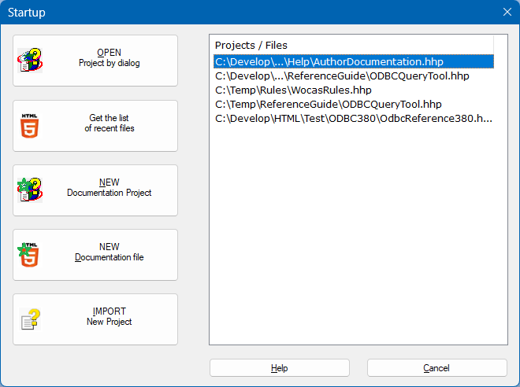

STARTUP
This is the first dialog you see aft er starting the application. Here you can do one of the following:
- Open a documentation project you have been working on previously. Just select the project from the list on the
right
- Search for a documentaion project on the filesystem (button OPEN)
- Work on one of the last used 15 files (button Get the list of recent files)
- Start a new documentation project (button NEW project)
- Start a new documentation page (button NEW file)
- Import an existing CHM as a new documentation project in an empty directory
(button IMPORT)
This is the dialog you will see:
